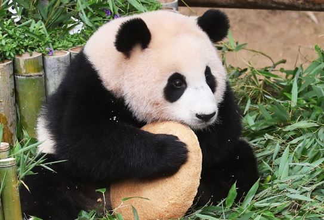
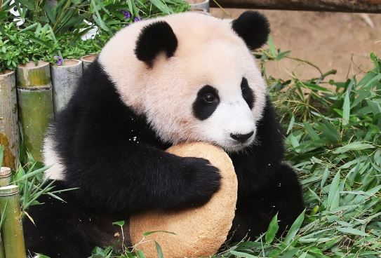

About me
My Interests
My Favorites
이름: 최근영
MBTI: ISTP -> ESTJ
저는 고양국제고등학교 1학년 5반 19번 입니다
전공어는 일본어 입니당
인스타 아이디는 @fwt323 입니다
동아리는 라르고(고최동임) 입니다

이름: 최근영
MBTI: ISTP -> ESTJ
저는 고양국제고등학교 1학년 5반 19번 입니다
전공어는 일본어 입니당
인스타 아이디는 @fwt323 입니다
